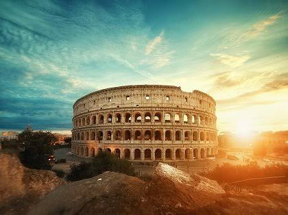
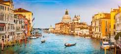

italia
A Itália reúne história, arte e uma das comidas mais amadas do planeta. Entre ruínas antigas, canais charmosos e cidades cheias de cultura, cada parada tem um jeito próprio de encantar quem chega. Confira abaixo três lugares para colocar no seu roteiro.
Coliseu Roma

Construído há quase dois mil anos, o Coliseu era palco de lutas e grandes espetáculos. Hoje é um dos monumentos mais visitados do mundo. Perto dele ficam o Fórum Romano e o Monte Palatino, que combinam com a visita.
Veneza

Cidade construída sobre canais, Veneza tem barcos no lugar de carros. Passear de gôndola e se perder pelas ruelas faz parte da experiência. Vale explorar com calma, sem pressa de chegar.
Montmartre e Sacré-Cœur

Berço do Renascimento, Florença tem uma catedral com cúpula enorme e museus cheios de obras de arte. É uma cidade pequena, fácil de explorar a pé e ótima para quem gosta de história.
Dica geral
Experimente a comida local, como massas frescas, pizza e sorvete (gelato).